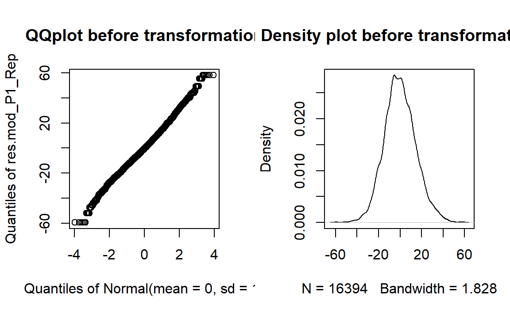

Task description
We developed an emotion priming paradigm combined with a delayed-match-to-sample-task to examine categorical differences in facial expression processing in young children. In particular, EEG was recorded while preschoolers observed pairs of faces presented sequentially. In some trials, the two sequential facial stimuli (hereafter: ‘Face 1’ and ‘Face 2’) were identical, while in other trials they differed with regards to the facial expression displayed (happy, angry, or neutral).
We calculated linear mixed models (LMM) separately for each ERP component. As fixed factors, all models included treatment contrasts for facial expressions (emotional [average of happy/angry] vs. neutral faces (Emo_Neu), happy vs. angry faces (Hap_Ang)), repetition (novel vs. repeated emotion trials (Rep_Nov)) as well as their interaction (Emo_NeuxRep_Nov, Hap_AngxRep_Nov). Working memory (WM_scal) was entered as a scaled covariate in all LMM analyses to control for cognitive task demands. Additionally, we entered stimulus contrast (contr_F2_scal) as a scaled covariate to control for low-level differences.
The random effects structure included random intercepts for participants ((1|ID)), stimulus ((1|Stim_Type)) and electrodes ((1|Elect_site)). Assumptions for multiple regression were checked for all models (normality of the residuals, linearity, multicollinearity, homoscedasticity).
We predicted that amplitudes would be larger for emotional compared to neutral facial expressions. We expected happy facial expressions to elicit the largest amplitudes, followed by angry and neutral facial expressions. Assuming that comprehensive facial expression representations are in place for young children, we expected an amplitude decrease in response to identical facial expressions. Again, we predicted that happy facial expressions would elicit the largest amplitude reduction compared to angry or neutral expressions because they are the most readily processed.
ERP results
Descriptive statistics
ERP waveforms and topographies at Face 2. ERP waveforms and topographies at Face 2. Top left: Grand-averaged P1 and P3 waveforms for novel and repeated happy, angry and neutral facial expressions. Shadowed areas indicate the time windows used to identify participants' individual peaks and mean amplitudes. Top right: Grand-averaged P1 amplitudes at Face 2 for repeated andbnovel happy, angry and neutral facial expressions. Error bars indicate standard errors (SE). Bottom: Topographies of the averaged P1 activity (90-130 ms) displaying difference waves for significant contrasts of the Repetition x Facial Expression interaction (from the left): novel happy–repeated happy and novel happy–novel angry.
# Calculate condtional mean
Face2_data_cond = aggregate(Face2_data_icc$data, FUN=mean,
by=list(time=Face2_data_icc$time, Condition=Face2_data_icc$Condition))
P1_rep_all_traj = ggplot(Face2_data_cond, aes(time,x))+
theme(panel.background = element_blank(),panel.border = element_rect(colour = "grey", fill=NA, size=2),
axis.title.y = element_text(size = 8, margin = margin(t = 0, r = 0, b = 0, l = 0)),
axis.title.x = element_text(size = 8, margin = margin(t = 0, r = 0, b = 0, l = 0)),
axis.text=element_text(size=8),
legend.position="none",legend.title=element_blank())+
stat_summary(fun.y = mean,geom = "line", size = 0.4, aes(linetype = Condition, colour = Condition))+
scale_linetype_manual(values=c("dotted","longdash","solid","dotted","longdash","solid"))+
scale_colour_manual(values = c ("#134462","#134462","#134462","#2FA9F5","#2FA9F5","#2FA9F5"))+
#ggtitle("P1 & P3") +
labs(x = "\nTime [ms]",y = expression(paste("Amplitude [",mu,"V]")),colour = "")+
coord_cartesian(ylim=c(-2, 18),xlim=c(-100,600)) +
scale_y_continuous(breaks=seq(-2,18,4))+
scale_x_continuous(breaks=seq(-100,600,200))+
geom_vline(xintercept = 0,linetype = "dashed",colour="grey" )+
geom_hline(yintercept = 0,linetype = "dashed",colour="grey")+
annotate("rect", xmin = 90, xmax = 130, ymin = -2.5, ymax = 18.5, alpha = .3)+
annotate("rect", xmin = 300, xmax = 500, ymin = -2.5, ymax = 18.5, alpha = .3)
load.Rdata(filename="./data/ERP_data.Rdata", "ERPs")
## Select data
ERPs_sel = subset(ERPs, Exclude_smaller_250ms == FALSE
& Response == 1
& Group_pcic == 2 | Group_pcic == 3)
# Rename values of Face2 condition
ERPs_sel$Condition[ERPs_sel$Condition == 4]='angry';
ERPs_sel$Condition[ERPs_sel$Condition == 5]='happy';
ERPs_sel$Condition[ERPs_sel$Condition == 6]='neutral';
ERPs_sel$Condition[ERPs_sel$Condition == 7]='angry';
ERPs_sel$Condition[ERPs_sel$Condition == 8]='happy';
ERPs_sel$Condition[ERPs_sel$Condition == 9]='neutral';
# Rename variables
ERPs_sel$Group_pcic[ERPs_sel$Group_pcic == 2] = "novel"
ERPs_sel$Group_pcic[ERPs_sel$Group_pcic == 3] = "repeated"
# Summarize data
stats_P1_all = summarySEwithin(ERPs_sel, measurevar="mean_ROI_P1", withinvars=c("Group_pcic","Condition"), idvar = "ID")
# Plot
P1_plot = ggplot(stats_P1_all, aes(x=Condition, y=mean_ROI_P1, fill = Group_pcic)) +
geom_bar(position=position_dodge(), stat="identity", color = "black", size=0.5,width=0.9)+
geom_errorbar(aes(ymin=mean_ROI_P1-se, ymax=mean_ROI_P1+se),
size=0.5, width=0.2, position=position_dodge(.9)) +
labs (x= "", y = expression(paste("Amplitude [",mu,"V]")),colour = "") +
scale_fill_manual(values=nov_col)+
coord_cartesian(ylim = c(0, 20)) +
scale_y_continuous(breaks=seq(0,25,5))+
theme_bw()+
theme_SN +
theme(legend.position = "left", legend.direction = "vertical",
legend.key.size = unit(1, "cm"),
legend.key.width = unit(0.5,"cm"),
legend.text=element_text(size=7), text=element_text(size = 8), legend.title = element_blank(),
axis.title.y = element_text(size = 8, margin = margin(t = 0, r = 20, b = 0, l = 0)))
legend_behav = get_legend(P1_plot)
# Put plots together
plots_EEG_F2 = cowplot::plot_grid(
P1_rep_all_traj + theme(legend.position="none"),
legend_ERP, legend_behav,
align = 'vh',
hjust = -1,
nrow = 1,
rel_widths = c(1, .3, .3))
plots_EEG_F2_2 = cowplot::plot_grid(
# legend_behav,
P1_plot + theme(legend.position="none"),
align = 'vh',
hjust = -1,
nrow = 1,
rel_widths = c(.4, 1))
# Display plot
# https://wilkelab.org/cowplot/articles/shared_legends.html
fig_rep_ERP = cowplot::plot_grid(plots_EEG_F2, plots_EEG_F2_2,rel_widths = c(.7,.6))
# Get topographies
Topo_Cat = read.csv(file="./data/ERPs_Topo_Face2.csv", header=TRUE, sep=",")
# Remove participant 5
Topo_Cat = Topo_Cat[with(Topo_Cat, !(Topo_Cat$ID==5)), ]
# Re-name to fit topoplot function
names(Topo_Cat)[names(Topo_Cat) == "Time"] = "time"
# Change from wide to long format for electrodes
Topo_Cat = gather(Topo_Cat, electrode, amplitude, Fp1:Oz, factor_key=TRUE)
# Rename A1/A2
names(Topo_Cat)[names(Topo_Cat) == "A1"] = "TP9"
names(Topo_Cat)[names(Topo_Cat) == "A2"] = "TP10"
# Plot topoplots for repeated / novel emotion trials
Topo_rep_hap = subset(Topo_Cat, Condition == 4)
Topo_nov_hap = subset(Topo_Cat, Condition == 7)
Topo_nov_ang = subset(Topo_Cat, Condition == 9)
# Calculate difference scores for different contrasts
Topo_Diff_nov_hap_rep_hap = data.frame(ID = Topo_rep_hap[,1], time = Topo_rep_hap[,3],
electrode = Topo_rep_hap[,4], amplitude = Topo_nov_hap$amplitude - Topo_rep_hap$amplitude)
Topo_Diff_nov_hap_nov_ang = data.frame(ID = Topo_nov_hap[,1], time = Topo_nov_hap[,3],
electrode = Topo_nov_hap[,4], amplitude = Topo_nov_hap$amplitude - Topo_nov_ang$amplitude)
## P1
# Select time windows
Topo_Diff_nov_hap_rep_hap_P1 = subset(Topo_Diff_nov_hap_rep_hap, time >= 90 & time <= 130)
Topo_Diff_nov_hap_nov_ang_P1 = subset(Topo_Diff_nov_hap_nov_ang, time >= 90 & time <= 130)
# Add electrode information
Topo_Diff_nov_hap_rep_hap_P1 = electrode_locations(Topo_Diff_nov_hap_rep_hap_P1, electrode = "electrode", drop = FALSE,montage = NULL)
Topo_Diff_nov_hap_nov_ang_P1 = electrode_locations(Topo_Diff_nov_hap_nov_ang_P1, electrode = "electrode", drop = FALSE,montage = NULL)
# Create topographies
topo_diff_nov_hap_rep_hap_P1 = ggplot(Topo_Diff_nov_hap_rep_hap_P1, aes(x = x, y = y, fill = amplitude, label = electrode)) +
ggtitle("nov. hap. \u2013 rep. hap.")+
geom_topo(grid_res = 300, interp_limit = "head", chan_markers = "point", chan_size = 0.6,
head_size = 0.9) +
scale_fill_distiller(palette = "RdBu" , limits = c(-2.5,3.5)) +
theme_void() +
coord_equal() +
labs(fill = expression(paste("Amplitude (", mu,"V)")))+
theme(legend.position = "none", plot.title = element_text(size = 8, face = "bold", hjust = 0.5))
topo_diff_nov_hap_nov_ang_P1 = ggplot(Topo_Diff_nov_hap_nov_ang_P1, aes(x = x, y = y, fill = amplitude, label = electrode)) +
ggtitle("nov. hap. \u2013 nov. ang.")+
geom_topo(grid_res = 300, interp_limit = "head", chan_markers = "point", chan_size = 0.6,
head_size = 0.9) +
scale_fill_distiller(palette = "RdBu" , limits = c(-2.5,3.5)) +
theme_void() +
coord_equal() +
labs(fill = expression(paste("Amplitude (", mu,"V)")))+
theme(legend.position = "none", plot.title = element_text(size = 8, face = "bold", hjust = 0.5))
# Get topography legend
topo_diff_nov_hap_P1_leg = ggplot(Topo_Diff_nov_hap_rep_hap_P1, aes(x = x, y = y, fill = amplitude, label = electrode)) +
ggtitle("P1 (90-130 ms)")+
geom_topo(grid_res = 300, interp_limit = "head", chan_markers = "point", chan_size = 0.6,
head_size = 0.9) +
scale_fill_distiller(palette = "RdBu" , limits = c(-2.5,3.5)) +
theme_void() +
coord_equal() +
labs(fill = expression(paste("", mu,"V")))+
theme(legend.position = "right", legend.title=element_text(size=8), legend.text=element_text(size=7),
legend.key.size = unit(0.4, "cm"))
## Display plots
# https://wilkelab.org/cowplot/articles/shared_legends.html
topo_leg = get_legend(topo_diff_nov_hap_P1_leg)
fig_Face_2_topo = cowplot::plot_grid(topo_diff_nov_hap_rep_hap_P1, topo_diff_nov_hap_nov_ang_P1, topo_leg, ncol=3)
fig_Face2_cat = cowplot::plot_grid(fig_rep_ERP, fig_Face_2_topo, nrow = 2, rel_heights = c(2, 1), align = "v")
#fig_Face2_cat = cowplot::plot_grid(plots_EEG_F2, fig_Face_2_topo, nrow = 2, rel_heights = c(2, 1), align = "v")
fig_Face2_cat
# Save figure for publication
#ggsave("Figure_X_DMTST_ERPs.tiff", plot = last_plot(), dpi = 300)Model specification
LMM P1: Random effect structure
The final model was:
# Select correct responses and outlier-free data
P1_Rep = subset(ERP_data, Exclude_smaller_250ms == FALSE & Response == 1)
# Prepare fixed factors
P1_Rep$ID = as.factor(P1_Rep$ID)
P1_Rep$Stim_Type = as.factor(P1_Rep$Stim_Type)
# Define novel vs repeated trials
P1_Rep$rep[P1_Rep$Group_cic == 1] = "repeated"
P1_Rep$rep[P1_Rep$Group_cic == 2] = "novel"
# Rename variables
P1_Rep$PT[P1_Rep$Group_pt == 1] = "prime"
P1_Rep$PT[P1_Rep$Group_pt == 2] = "target"
# Rename variables
P1_Rep$Response[P1_Rep$Response == 0] = "false"
P1_Rep$Response[P1_Rep$Response == 1] = "correct"
# Define emotions
P1_Rep$Condition[P1_Rep$Condition == 1] = "happy"
P1_Rep$Condition[P1_Rep$Condition == 2] = "neutral"
P1_Rep$Condition[P1_Rep$Condition == 3] = "angry"
P1_Rep$Condition[P1_Rep$Condition == 4] = "happy"
P1_Rep$Condition[P1_Rep$Condition == 5] = "neutral"
P1_Rep$Condition[P1_Rep$Condition == 6] = "angry"
P1_Rep$Condition[P1_Rep$Condition == 7] = "happy"
P1_Rep$Condition[P1_Rep$Condition == 8] = "neutral"
P1_Rep$Condition[P1_Rep$Condition == 9] = "angry"
# Factor and create contrasts
P1_Rep$rep = factor(P1_Rep$rep)
P1_Rep$PT = factor(P1_Rep$PT)
P1_Rep$Response = factor(P1_Rep$Response)
contrasts(P1_Rep$rep) = c(-0.5, 0.5) # intercept is the mean of repeated / novel
contrasts(P1_Rep$PT) = c(-0.5, 0.5) # intercept is the mean of repeated / novel
# contrasts(P1_Rep$Response) = c(-0.5,0.5) # intercept is the mean of repeated /
# novel
P1_Rep$Condition = factor(P1_Rep$Condition)
contrasts(P1_Rep$Condition) = contr.treatment(3, base = 3)
# A = angry, N = neutral, H = happy
HvsA = c(0.5, -0.5, 0) # compare: happy vs. angry
EvsN = c(-0.25, -0.25, 0.5) # compare happy/angry to neutral
contrasts(P1_Rep$Condition) = cbind(EvsN, HvsA)
# Bring electrodes in one variable
P1_Rep = gather(P1_Rep, Elect_site, P1_Amplitude, P1_PO3:P1_Oz, factor_key = TRUE)
P1_Rep$Elect_site = factor(P1_Rep$Elect_site)
P1_Rep = subset(P1_Rep, PT == "target")
# Build full model
mod_P1_Rep.lmer = lmer(P1_Amplitude ~ Condition * rep + contr_F2_scal + WM_scal +
+(1 | ID) + (1 | Stim_Type) + (1 | Elect_site), data = P1_Rep, control = lmerControl(calc.derivs = FALSE))
tab_model(mod_P1_Rep.lmer)P1_Amplitude ~ Condition * rep + contr_F2_scal + WM_scal + +(1 | , ID) + (1 | Stim_Type) + (1 | Elect_site)
LMM P1: Normality of residuals
## Check properties of DV / residuals
P1_Rep$Trans_P1 = P1_Rep$mean_ROI_P1 + 1 - min(P1_Rep$mean_ROI_P1)
# To make sure residuals follow ND: Calculate box-cox plot
boxcox(P1_Rep$Trans_P1 ~ P1_Rep$Group_pcic)P1 amplitudes met the assumption of normally distributed residuals.
# Visualize normality assumption of residuals (without log transform)
mod_P1_Rep = lm(Trans_P1 ~ Group_pcic, data = P1_Rep)
res.mod_P1_Rep = residuals(mod_P1_Rep)
par(mfrow = c(1, 2))
qqpl_mod_P1_Rep = qqPlot(res.mod_P1_Rep, main = "QQplot before transformation")
norm_mod_P1_Rep = plot(density(res.mod_P1_Rep), main = "Density plot before transformation")
par(mfrow = c(1, 1))LMM P1: Homoscedasticity
Based on visual inspection, we assumed homoscedasticity.
# Check homoscedasticity
plot(fitted(mod_P1_Rep.lmer), residuals(mod_P1_Rep.lmer))
abline(0, 0)LMM N170: Random effect structure
The final model was:
# Select correct responses and outlier-free data
N170_Rep = subset(ERP_data, Exclude_smaller_250ms == FALSE & Response == 1)
# Prepare fixed factors
N170_Rep$ID = as.factor(N170_Rep$ID)
N170_Rep$Stim_Type = as.factor(N170_Rep$Stim_Type)
# Single electrodes
N170_Rep = gather(N170_Rep, Elect_site, N170_Amplitude, N170l_TP7:N170r_P8, factor_key = TRUE)
N170_Rep$Elect_site = factor(N170_Rep$Elect_site)
# Define novel vs repeated trials
N170_Rep$rep[N170_Rep$Group_cic == 1] = "repeated"
N170_Rep$rep[N170_Rep$Group_cic == 2] = "novel"
# Rename variables
N170_Rep$PT[N170_Rep$Group_pt == 1] = "prime"
N170_Rep$PT[N170_Rep$Group_pt == 2] = "target"
# Define emotions
N170_Rep$Condition[N170_Rep$Condition == 1] = "happy"
N170_Rep$Condition[N170_Rep$Condition == 2] = "neutral"
N170_Rep$Condition[N170_Rep$Condition == 3] = "angry"
N170_Rep$Condition[N170_Rep$Condition == 4] = "happy"
N170_Rep$Condition[N170_Rep$Condition == 5] = "neutral"
N170_Rep$Condition[N170_Rep$Condition == 6] = "angry"
N170_Rep$Condition[N170_Rep$Condition == 7] = "happy"
N170_Rep$Condition[N170_Rep$Condition == 8] = "neutral"
N170_Rep$Condition[N170_Rep$Condition == 9] = "angry"
# Factor and create contrasts
N170_Rep$rep = factor(N170_Rep$rep)
N170_Rep$PT = factor(N170_Rep$PT)
N170_Rep$Response = factor(N170_Rep$Response)
contrasts(N170_Rep$rep) = c(-0.5, 0.5) # intercept is the mean of repeated / novel
contrasts(N170_Rep$PT) = c(-0.5, 0.5) # intercept is the mean of repeated / novel
N170_Rep$Condition = factor(N170_Rep$Condition)
contrasts(N170_Rep$Condition) = contr.treatment(3, base = 3)
# A = angry, N = neutral, H = happy
HvsA = c(0.5, -0.5, 0) # compare: happy vs. angry
EvsN = c(-0.25, -0.25, 0.5) # compare happy/angry to neutral
contrasts(N170_Rep$Condition) = cbind(EvsN, HvsA)
N170_Rep = subset(N170_Rep, PT == "target")
# Build full model
mod_N170_Rep.lmer = lmer(N170_Amplitude ~ Condition * rep + contr_F2_scal + WM_scal +
+(1 | ID) + (1 | Stim_Type) + (1 | Elect_site), data = N170_Rep, control = lmerControl(calc.derivs = FALSE))N170_Amplitude ~ Condition * rep + contr_F2_scal + WM_scal + , +(1 | ID) + (1 | Stim_Type) + (1 | Elect_site)
LMM N170: Normality of residuals
## Check properties of DV / residuals
N170_Rep$Trans_N170 = N170_Rep$N170_Amplitude + 1 - min(N170_Rep$N170_Amplitude)
# To make sure residuals follow ND: Calculate box-cox plot
boxcox(N170_Rep$Trans_N170 ~ N170_Rep$Group_pcic)
N170 amplitudes met the assumption of normally distributed residuals.
# Visualize normality assumption of residuals (without log transform)
mod_N170_Rep = lm(Trans_N170 ~ Group_pcic, data = N170_Rep)
res.mod_N170_Rep = residuals(mod_N170_Rep)
par(mfrow = c(1, 2))
qqpl_mod_N170_Rep = qqPlot(res.mod_N170_Rep, main = "QQplot before transformation")
norm_mod_N170_Rep = plot(density(res.mod_N170_Rep), main = "Density plot before transformation")par(mfrow = c(1, 1))LMM N170: Homoscedasticity
# Check homoscedasticity
plot(fitted(mod_N170_Rep.lmer), residuals(mod_N170_Rep.lmer))
abline(0, 0)
Based on visual inspection, we assumed homoscedasticity.
LMM P3: Random effect structure
The final model was:
# Select correct responses and outlier-free data
P3_Rep = subset(ERP_data, Exclude_smaller_250ms == FALSE & Response == 1)
# Prepare fixed factors
P3_Rep$ID = as.factor(P3_Rep$ID)
P3_Rep$Stim_Type = as.factor(P3_Rep$Stim_Type)
# Define novel vs repeated trials
P3_Rep$rep[P3_Rep$Group_cic == 1] = "repeated"
P3_Rep$rep[P3_Rep$Group_cic == 2] = "novel"
# Rename variables
P3_Rep$PT[P3_Rep$Group_pt == 1] = "prime"
P3_Rep$PT[P3_Rep$Group_pt == 2] = "target"
# Define emotions
P3_Rep$Condition[P3_Rep$Condition == 1] = "happy"
P3_Rep$Condition[P3_Rep$Condition == 2] = "neutral"
P3_Rep$Condition[P3_Rep$Condition == 3] = "angry"
P3_Rep$Condition[P3_Rep$Condition == 4] = "happy"
P3_Rep$Condition[P3_Rep$Condition == 5] = "neutral"
P3_Rep$Condition[P3_Rep$Condition == 6] = "angry"
P3_Rep$Condition[P3_Rep$Condition == 7] = "happy"
P3_Rep$Condition[P3_Rep$Condition == 8] = "neutral"
P3_Rep$Condition[P3_Rep$Condition == 9] = "angry"
# Factor and create contrasts
P3_Rep$rep = factor(P3_Rep$rep)
P3_Rep$PT = factor(P3_Rep$PT)
contrasts(P3_Rep$rep) = c(-0.5, 0.5) # intercept is the mean of repeated / novel
contrasts(P3_Rep$PT) = c(-0.5, 0.5) # intercept is the mean of repeated / novel
P3_Rep$Condition = factor(P3_Rep$Condition)
contrasts(P3_Rep$Condition) = contr.treatment(3, base = 3)
# A = angry, N = neutral, H = happy
HvsA = c(0.5, -0.5, 0) # compare: happy vs. angry
EvsN = c(-0.25, -0.25, 0.5) # compare happy/angry to neutral
contrasts(P3_Rep$Condition) = cbind(EvsN, HvsA)
# Bring electrodes in one variable
P3_Rep = gather(P3_Rep, Elect_site, P3_Amplitude, P3_PO3:P3_Oz, factor_key = TRUE)
P3_Rep$Elect_site = factor(P3_Rep$Elect_site)
P3_Rep = subset(P3_Rep, PT == "target")
# P3_Rep = subset(P3_Rep, Response == 'false')
# Build full model
mod_P3_Rep.lmer = lmer(P3_Amplitude ~ Condition * rep + contr_F2_scal + WM_scal +
+(1 | ID) + (1 | Stim_Type) + (1 | Elect_site), data = P3_Rep, control = lmerControl(calc.derivs = FALSE))P3_Amplitude ~ Condition * rep + contr_F2_scal + WM_scal + +(1 | , ID) + (1 | Stim_Type) + (1 | Elect_site)
LMM P3: Normality of residuals
## Check properties of DV / residuals
P3_Rep$Trans_P3 = P3_Rep$mean_ROI_P3 + 1 - min(P3_Rep$mean_ROI_P3)
# To make sure residuals follow ND: Calculate box-cox plot
boxcox(P3_Rep$Trans_P3 ~ P3_Rep$Group_pcic)P3 amplitudes met the assumption of normally distributed residuals.
# Visualize normality assumption of residuals (without log transform)
mod_P3_Rep = lm(Trans_P3 ~ Group_pcic, data = P3_Rep)
res.mod_P3_Rep = residuals(mod_P3_Rep)
par(mfrow = c(1, 2))
qqpl_mod_P3_Rep = qqPlot(res.mod_P3_Rep, main = "QQplot before transformation")
norm_mod_P3_Rep = plot(density(res.mod_P3_Rep), main = "Density plot before transformation")
par(mfrow = c(1, 1))LMM P3: Homoscedasticity
# Check homoscedasticity
plot(fitted(mod_P3_Rep.lmer), residuals(mod_P3_Rep.lmer))
abline(0, 0)
Based on visual inspection, we assumed homoscedasticity.
Results
P1
### Calculate post-hoc tests P1 valence
P1_Rep$interaction = interaction(P1_Rep$rep, P1_Rep$Condition)
mod_P1_Rep.lmer2 = lmer(P1_Amplitude ~ contr_F2_scal + WM_scal + Condition * rep +
+(1 | ID) + (1 | Stim_Type) + (1 | Elect_site), data = P1_Rep, control = lmerControl(calc.derivs = FALSE))
# Choose contrasts of interest / add fdr-correction
P1_Rep_lmm_model_posthoc = summary(glht(mod_P1_Rep.lmer2, linfct = mcp(Condition = c("neutral - happy = 0",
"neutral - angry = 0")), test = adjusted(type = "fdr")))
# Get ready for presentation in RMarkdown
tab1 = merge(as.data.frame(P1_Rep_lmm_model_posthoc$test$coefficients), as.data.frame(P1_Rep_lmm_model_posthoc$test$sigma),
by = 0)
tab2 = as.data.frame(P1_Rep_lmm_model_posthoc$test$pvalues)
rownames(tab2) = rownames(as.data.frame(P1_Rep_lmm_model_posthoc$test$tstat))
tab2 = merge(as.data.frame(P1_Rep_lmm_model_posthoc$test$tstat), tab2, by = 0)
P1_Rep_posthoc1 = merge(tab1, tab2, by = "Row.names")
colnames(P1_Rep_posthoc1) = c("Contrast", "Est.", "Std. Error", "z value", "p value")
### Calculate post-hoc tests P1 valence
P1_Rep$interaction = interaction(P1_Rep$rep, P1_Rep$Condition)
mod_P1_Rep.lmer3 = lmer(P1_Amplitude ~ contr_F2_scal + WM_scal + interaction + +(1 |
ID) + (1 | Stim_Type) + (1 | Elect_site), data = P1_Rep, control = lmerControl(calc.derivs = FALSE))
P1_Rep_lmm_model_posthoc = summary(glht(mod_P1_Rep.lmer3, linfct = mcp(interaction = c("novel.happy - novel.angry = 0",
"novel.happy - repeated.angry = 0", "repeated.angry - novel.angry = 0", "repeated.happy - novel.angry = 0",
"repeated.happy - novel.happy = 0", "repeated.happy - repeated.angry\t= 0")),
test = adjusted(type = "fdr")))
# Get ready for presentation in RMarkdown
tab1 = merge(as.data.frame(P1_Rep_lmm_model_posthoc$test$coefficients), as.data.frame(P1_Rep_lmm_model_posthoc$test$sigma),
by = 0)
tab2 = as.data.frame(P1_Rep_lmm_model_posthoc$test$pvalues)
rownames(tab2) = rownames(as.data.frame(P1_Rep_lmm_model_posthoc$test$tstat))
tab2 = merge(as.data.frame(P1_Rep_lmm_model_posthoc$test$tstat), tab2, by = 0)
P1_Rep_posthoc2 = merge(tab1, tab2, by = "Row.names")
colnames(P1_Rep_posthoc2) = c("Contrast", "Est.", "Std. Error", "z value", "p value")In line with our hypothesis, we found larger P1 amplitudes for emotional vs. neutral expressions (\(\beta\) = -1.31, p = 0.00). Both happy (p = 0.05) and angry expressions (p = 0.02) elicited larger P1 amplitudes compared to neutral expressions. No amplitude differences were detected between happy and angry expressions (\(\beta\) = -0.14, p = 0.72). There was no main effect of repetition (\(\beta\) = -0.25, p = 0.49). Similarly, no interaction of emotional vs. neutral expressions with repetition was found (\(\beta\) = 0.73, p = 0.43). We did, however, detect a significant interaction of happy vs. angry expressions with repetition (\(\beta\) = 2.69, p < 0.001): Post-hoc tests indicated that, in line with our hypothesis, P1 amplitudes for repeated happy expressions were smaller than for novel happy expressions (p = 0.01). Novel happy expressions also elicited larger P1 amplitudes than novel angry expressions (p = 0.04; all other p > 0.15).
N170
We did not find significant main effects for facial expression contrasts (emotion vs. neutral expressions: \(\beta\) = -0.08, p = 0.83; happy vs. angry expressions: \(\beta\) = 0.11, p = 0.75) or repetition (\(\beta\) = 0.07, p = 0.80) None of the interactions of facial expressions with repetition were significant (emotion vs. neutral expressions: β = 0.87, p = 0.43; happy vs. angry expressions: β = 1.16, p = 0.08). None of the interactions of facial expressions with repetition were significant (emotion vs. neutral expressions: \(\beta\) = 0.87, p = 0.43; happy vs. angry expressions: \(\beta\) = 1.16, p < 0.001).
P3
### Calculate post-hoc tests P3 valence
P3_Rep$interaction = interaction(P3_Rep$rep, P3_Rep$Condition)
mod_P3_Rep.lmer2 = lmer(P3_Amplitude ~ contr_F2_scal + WM_scal + Condition * rep +
+(1 | ID) + (1 | Stim_Type) + (1 | Elect_site), data = P3_Rep, control = lmerControl(calc.derivs = FALSE))
# Choose contrasts of interest / add fdr-correction
P3_Rep_lmm_model_posthoc = summary(glht(mod_P3_Rep.lmer2, linfct = mcp(Condition = c("neutral - happy = 0",
"neutral - angry = 0")), test = adjusted(type = "fdr")))
# Get ready for presentation in RMarkdown
tab1 = merge(as.data.frame(P3_Rep_lmm_model_posthoc$test$coefficients), as.data.frame(P3_Rep_lmm_model_posthoc$test$sigma),
by = 0)
tab2 = as.data.frame(P3_Rep_lmm_model_posthoc$test$pvalues)
rownames(tab2) = rownames(as.data.frame(P3_Rep_lmm_model_posthoc$test$tstat))
tab2 = merge(as.data.frame(P3_Rep_lmm_model_posthoc$test$tstat), tab2, by = 0)
P3_Rep_posthoc = merge(tab1, tab2, by = "Row.names")
colnames(P3_Rep_posthoc) = c("Contrast", "Est.", "Std. Error", "z value", "p value")In line with our hypothesis, we detected differences for emotional vs. neutral facial expressions (\(\beta\) = -1.40, p = 0.01). Angry expressions elicited larger P3 amplitudes than neutral expressions (p < 0.001). No significant difference was found for happy vs. neutral expressions (p = 0.47). Angry expressions also elicited larger P3 amplitudes compared to happy expressions (\(\beta\) = 1.15, p = 0.01). P3 amplitudes did not show significant modulations by repetition (\(\beta\) = 0.40, p = 0.33). Interactions of repetition with facial expression contrasts were not significant (emotional vs. neutral facial expressions: \(\beta\) = 1.16, p = 0.27; happy vs. angry facial expressions: \(\beta\) = -0.59, p = 0.52). Additionally, we detected that stimulus' contrast was a significant predictor, with larger contrast eliciting larger P3 amplitudes (\(\beta\) = -0.51, p = 0.04).
Table: Face 2 results
# Define labels
labels = c("Emotion vs. Neutral", "Happy vs. Angry", "Repetition", "Stimulus' contrast",
"Working memory", "Repetition x E vs. N", "Repetition x H vs. A")
# Create table
tab_model(mod_P1_Rep.lmer, mod_N170_Rep.lmer, mod_P3_Rep.lmer, show.intercept = FALSE,
pred.labels = labels, string.est = "b", show.se = TRUE, string.se = "SE", show.stat = TRUE,
string.stat = "t", show.ci = FALSE, show.re.var = TRUE, show.obs = FALSE, emph.p = TRUE,
dv.labels = c("P1 Amplitude", "N170 Amplitude", "P3 Amplitude"), show.icc = TRUE)| P1 Amplitude | N170 Amplitude | P3 Amplitude | ||||||||||
|---|---|---|---|---|---|---|---|---|---|---|---|---|
| Predictors | b | SE | t | p | b | SE | t | p | b | SE | t | p |
| Emotion vs. Neutral | -1.31 | 0.47 | -2.82 | 0.005 | -0.08 | 0.38 | -0.22 | 0.826 | -1.40 | 0.53 | -2.64 | 0.008 |
| Happy vs. Angry | -0.14 | 0.40 | -0.35 | 0.724 | 0.11 | 0.33 | 0.32 | 0.749 | 1.15 | 0.46 | 2.51 | 0.012 |
| Repetition | -0.25 | 0.37 | -0.69 | 0.493 | 0.07 | 0.28 | 0.26 | 0.798 | 0.40 | 0.41 | 0.98 | 0.329 |
| Stimulus’ contrast | 0.31 | 0.23 | 1.30 | 0.193 | 0.04 | 0.14 | 0.30 | 0.761 | -0.51 | 0.25 | -2.02 | 0.043 |
| Working memory | 0.72 | 0.94 | 0.77 | 0.440 | 0.78 | 0.63 | 1.24 | 0.217 | 0.33 | 1.27 | 0.26 | 0.794 |
| Repetition x E vs. N | 0.73 | 0.93 | 0.78 | 0.433 | 0.87 | 0.77 | 1.14 | 0.256 | 1.16 | 1.06 | 1.09 | 0.275 |
| Repetition x H vs. A | 2.69 | 0.81 | 3.33 | 0.001 | 1.16 | 0.66 | 1.76 | 0.079 | -0.59 | 0.92 | -0.64 | 0.523 |
| Random Effects | ||||||||||||
| σ2 | 258.83 | 222.67 | 336.85 | |||||||||
| τ00 | 5.40 Stim_Type | 0.19 Stim_Type | 4.45 Stim_Type | |||||||||
| 24.57 ID | 10.79 ID | 45.75 ID | ||||||||||
| 12.92 Elect_site | 1.57 Elect_site | 3.84 Elect_site | ||||||||||
| ICC | 0.14 | 0.05 | 0.14 | |||||||||
| N | 28 ID | 28 ID | 28 ID | |||||||||
| 72 Stim_Type | 72 Stim_Type | 72 Stim_Type | ||||||||||
| 5 Elect_site | 6 Elect_site | 5 Elect_site | ||||||||||
| Marginal R2 / Conditional R2 | 0.004 / 0.145 | 0.003 / 0.056 | 0.002 / 0.140 | |||||||||
Note: p-values for the fixed effects calculated using Wald-statistics approximation, uncorrected. b: unstandardized coefficient; SE: standard error; t: test statistic coefficient; p: p-value; σ2: within-group variance; τ00: between-group variance; ICC: interclass correlation (ratio of between-cluster variance to total variance); N: number of random effects.
Post-hoc test P1: Contrast Emotion vs. Neutral Facial Expressions
# Create table
kable(P1_Rep_posthoc1) %>%
kable_styling(bootstrap_options = c("hover"), font_size = 14, fixed_thead = T)| Contrast | Est. | Std. Error | z value | p value |
|---|---|---|---|---|
| neutral - angry | -0.912 | 0.405 | -2.25 | 0.045 |
| neutral - happy | -1.054 | 0.400 | -2.63 | 0.016 |
Post-hoc test P1: Contrast Emotion vs. Neutral with Repetition interaction
# Create table
kable(P1_Rep_posthoc2) %>%
kable_styling(bootstrap_options = c("hover"), font_size = 14, fixed_thead = T)| Contrast | Est. | Std. Error | z value | p value |
|---|---|---|---|---|
| novel.happy - novel.angry | 1.488 | 0.568 | 2.620 | 0.044 |
| novel.happy - repeated.angry | 0.579 | 0.579 | 1.001 | 0.749 |
| repeated.angry - novel.angry | 0.909 | 0.595 | 1.527 | 0.421 |
| repeated.happy - novel.angry | -0.296 | 0.607 | -0.487 | 0.962 |
| repeated.happy - novel.happy | -1.784 | 0.595 | -2.999 | 0.015 |
| repeated.happy - repeated.angry | -1.205 | 0.572 | -2.107 | 0.151 |
Post-hoc test P3: Contrast Emotion vs. Neutral
# Create table
kable(P3_Rep_posthoc) %>%
kable_styling(bootstrap_options = c("hover"), font_size = 14, fixed_thead = T)| Contrast | Est. | Std. Error | z value | p value |
|---|---|---|---|---|
| neutral - angry | -1.620 | 0.460 | -3.52 | 0.001 |
| neutral - happy | -0.474 | 0.454 | -1.04 | 0.473 |
Session info
# Get session info
sessionInfo()R version 4.0.2 (2020-06-22)
Platform: x86_64-w64-mingw32/x64 (64-bit)
Running under: Windows 10 x64 (build 18362)
Matrix products: default
locale:
[1] LC_COLLATE=German_Germany.1252 LC_CTYPE=German_Germany.1252
[3] LC_MONETARY=German_Germany.1252 LC_NUMERIC=C
[5] LC_TIME=German_Germany.1252
attached base packages:
[1] stats graphics grDevices utils datasets methods base
other attached packages:
[1] gvlma_1.0.0.3 eegUtils_0.5.0 forcats_0.5.1 stringr_1.4.0
[5] purrr_0.3.4 readr_1.4.0 tidyr_1.1.3 tibble_3.1.1
[9] tidyverse_1.3.1 sjlabelled_1.1.7 sjmisc_2.8.6 sjPlot_2.8.7
[13] Rmisc_1.5 plyr_1.8.6 reshape2_1.4.4 psych_2.1.3
[17] multcomp_1.4-16 TH.data_1.0-10 mvtnorm_1.1-1 MASS_7.3-53.1
[21] lmerTest_3.1-3 lme4_1.1-26 Matrix_1.3-2 Hmisc_4.5-0
[25] Formula_1.2-4 survival_3.2-10 lattice_0.20-41 ggstatsplot_0.7.2
[29] ez_4.4-0 EnvStats_2.4.0 eeptools_1.2.4 ggplot2_3.3.3
[33] dplyr_1.0.5 cowplot_1.1.1 summarytools_0.9.9 miceadds_3.11-6
[37] mice_3.13.0 rmdformats_1.0.2 XLConnect_1.0.3 kableExtra_1.3.4
loaded via a namespace (and not attached):
[1] estimability_1.3 R.methodsS3_1.8.1 coda_0.19-4
[4] knitr_1.32 R.utils_2.10.1 data.table_1.14.0
[7] rpart_4.1-15 generics_0.1.0 future_1.21.0
[10] correlation_0.6.1 webshot_0.5.2 xml2_1.3.2
[13] lubridate_1.7.10 httpuv_1.5.5 assertthat_0.2.1
[16] viridis_0.6.0 WRS2_1.1-1 xfun_0.22
[19] hms_1.0.0 jquerylib_0.1.3 rJava_0.9-13
[22] evaluate_0.14 promises_1.2.0.1 fansi_0.4.2
[25] dbplyr_2.1.1 readxl_1.3.1 DBI_1.1.1
[28] tmvnsim_1.0-2 htmlwidgets_1.5.3 reshape_0.8.8
[31] kSamples_1.2-9 Rmpfr_0.8-4 paletteer_1.3.0
[34] ellipsis_0.3.1 backports_1.2.1 signal_0.7-6
[37] bookdown_0.21 insight_0.13.2 ggcorrplot_0.1.3
[40] rapportools_1.0 vctrs_0.3.7 abind_1.4-5
[43] cachem_1.0.4 withr_2.4.2 pryr_0.1.4
[46] checkmate_2.0.0 emmeans_1.5.5-1 vcd_1.4-8
[49] mnormt_2.0.2 svglite_2.0.0 cluster_2.1.2
[52] lazyeval_0.2.2 crayon_1.4.1 labeling_0.4.2
[55] pkgconfig_2.0.3 SuppDists_1.1-9.5 nlme_3.1-152
[58] statsExpressions_1.0.1 nnet_7.3-15 rlang_0.4.10
[61] globals_0.14.0 lifecycle_1.0.0 miniUI_0.1.1.1
[64] MatrixModels_0.5-0 sandwich_3.0-0 modelr_0.1.8
[67] cellranger_1.1.0 tcltk_4.0.2 matrixStats_0.58.0
[70] lmtest_0.9-38 mc2d_0.1-19 carData_3.0-4
[73] boot_1.3-27 zoo_1.8-9 reprex_2.0.0
[ reached getOption("max.print") -- omitted 97 entries ]